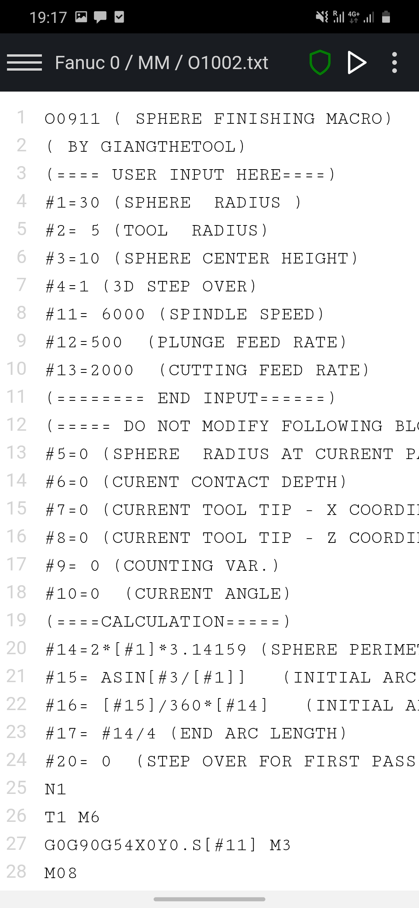
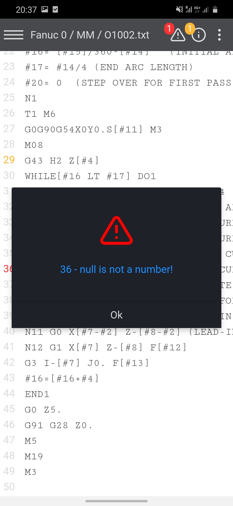
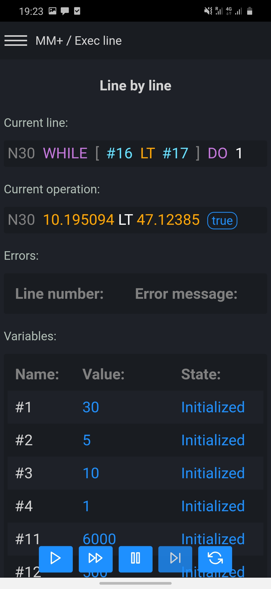
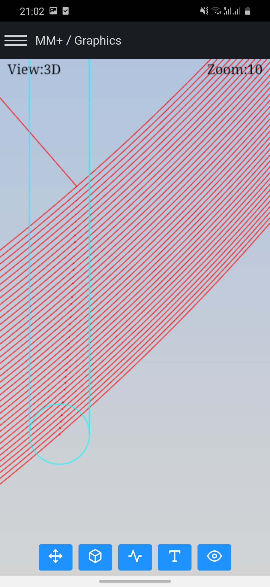
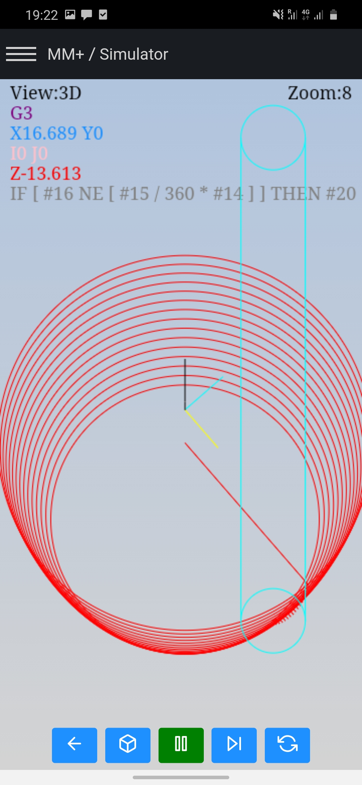
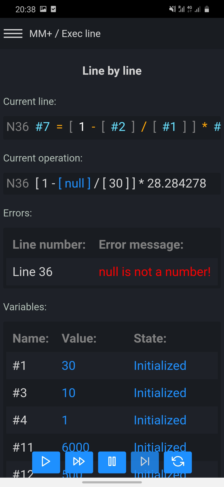
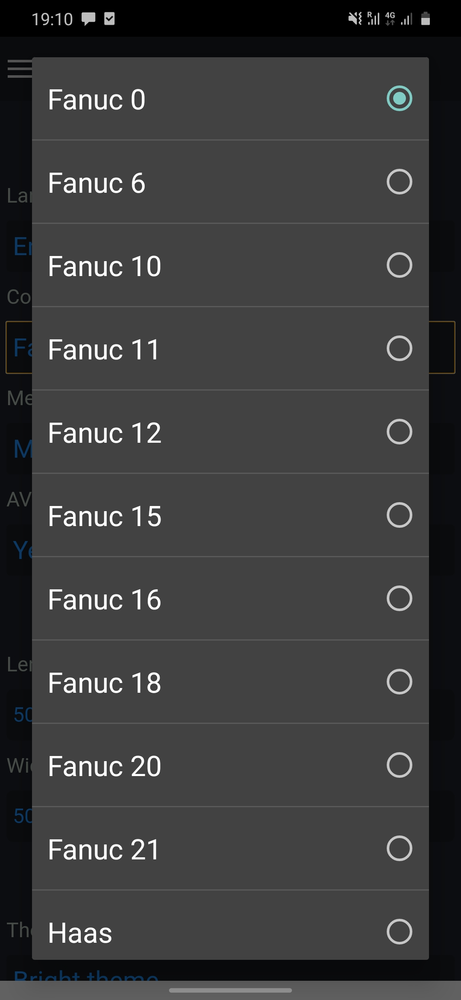

Macro Mill Plus CNC
Macro Mill Plus CNC - the most modern and advanced software for CNC programmers, significantly accelerating your work and increasing the safety of you and your coworkers
Purchase
Fanuc
Haas
Siemens
Mazak

About Macro Mill Plus CNC
Macro Mill Plus CNC is the successor to the Macro Terminal CNC. This application was created on the basis of many opinions and observations of the users of the Macro Terminal CNC and others. Unfortunately, the Macro Terminal CNC was not prepared for such a number of improvements and additions and it was necessary to create a new application from scratch.
Read moreSafeness & productivity
Macro Mill Plus CNC - the most powerful application for CNC machines ever created! Many errors and potentially dangerous cases are already checked when writing a CNC program, and the rest after its execution. It doesn't matter if you want to use CNC macros or some other form of programming (absolute, relative or polar), AVS (Advanced Validation System) will check your program as an experienced programmer is only able to do it!
Read more


For beginners as well as experienced ones
Macro Mill Plus CNC is the best solution for both beginners and advanced, thanks to AVS algoritm supervising and checking written CNC programs, easy-to-use user interface and many ready-to-use examples. Macro Mill Plus CNC will help you write CNC programs much faster, safer and easier than any other software on the market.
Fast & powerful
The Macro Mill Plus CNC is extremely fast thanks to the rebuilt interpreter and graphics module. This makes the Macro Mill Plus CNC a better solution for heavy and complex CNC programs. The graphics module is 100x faster than the one used in the Macro Terminal CNC. In addition, it offers a preview and simulation of the tool path in 3D and its rotation, shift, etc.


3D tool path
This new feature in Macro Mill Plus CNC has greatly improved the perception and analysis of the toolpath, which is very important to avoid potential collisions or erroneous values especially in the "Z" axis. In addition, the ability to rotate the image 180 degrees to each side, its shift and zoom allows you to better look at all the details, even on a small screen!
Finding errors quickly
Macro Mill Plus CNC, like other applications from the Macro family (Macro Terminal CNC, Macro Lathe CNC ), has a line-by-line function that allows you to check and display all mathematical, logical and variable assignments. This tool is extremely useful for detecting and avoiding potential errors in your code such as nulls, loops, and invalid values.

